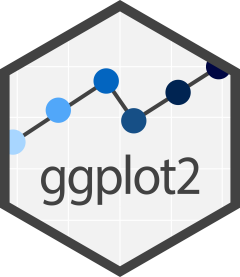
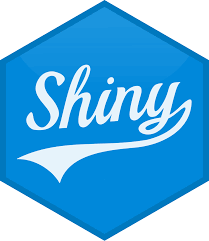
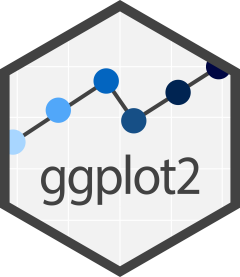
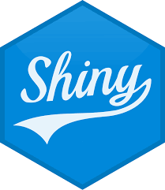

My Story

I’m Tatum Good, a data scientist passionate about turning patterns into clarity. I’m currently completing a BS/MS in Data Science at Willamette University, with minors in Computer Science and Mathematics. My work blends strong technical foundations in machine learning, statistical analysis, and data visualization with a deep interest in real-time data and its power to inform decision-making. My entry point into data science came through visual learning—seeing how models and algorithms could tell stories and surface insights that might otherwise stay hidden. That sense of discovery continues to drive me. Whether I'm building dashboards, cleaning messy data, or presenting findings, my focus is always on impact: making data interpretable, usable, and meaningful. I’ve led and contributed to diverse data projects, from analyzing state-level income and education trends to visualizing patterns in news articles using natural language processing. Across all of it, I aim to build tools and models that not only work—but communicate. As a student-athlete, I bring discipline, time management, and teamwork to every project. I thrive in collaborative environments and am eager to contribute to organizations tackling real-world challenges with data.

 


